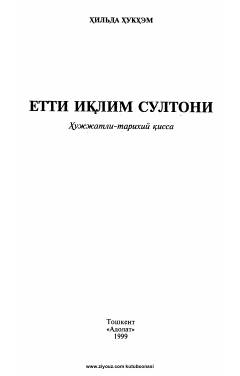

EIAmir Temur hayoti va faoliyatiga bag'ishlangan tarixiy-hujjatli qissa.
Ushbu asar ingliz yozuvchisi Hilda Hukhem tomonidan Amir Temur hayoti va faoliyatiga bag'ishlab yozilgan tarixiy-hujjatli qissadir. Muallif Britaniya muzeyidagi tarixiy manbalar asosida buyuk sarkardaning hayot yo'lini haqqoniy va ta'sirli tarzda yoritib bergan.